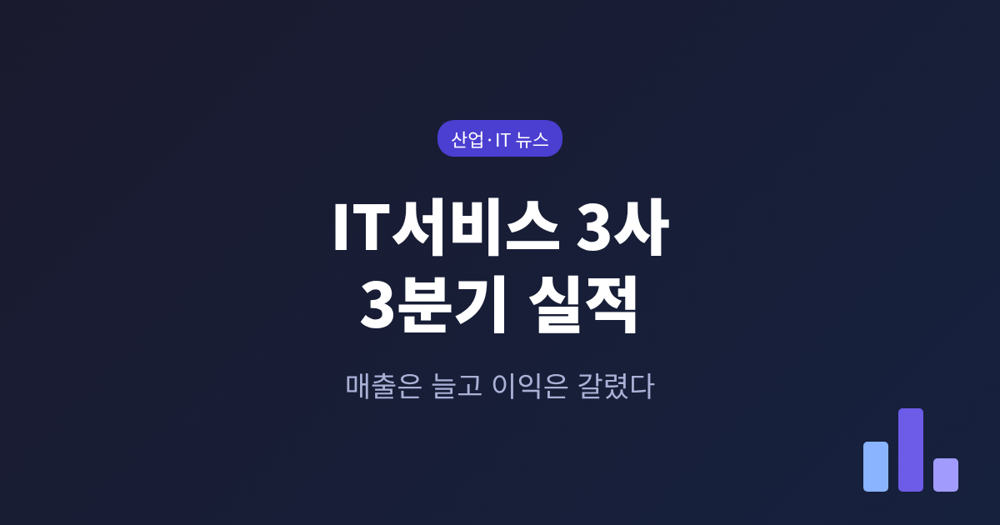
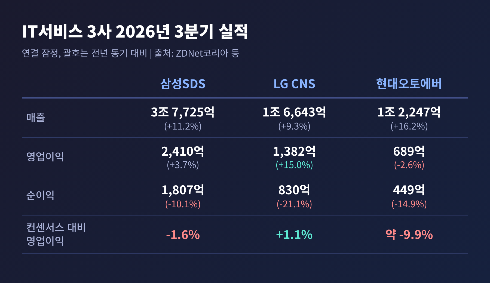
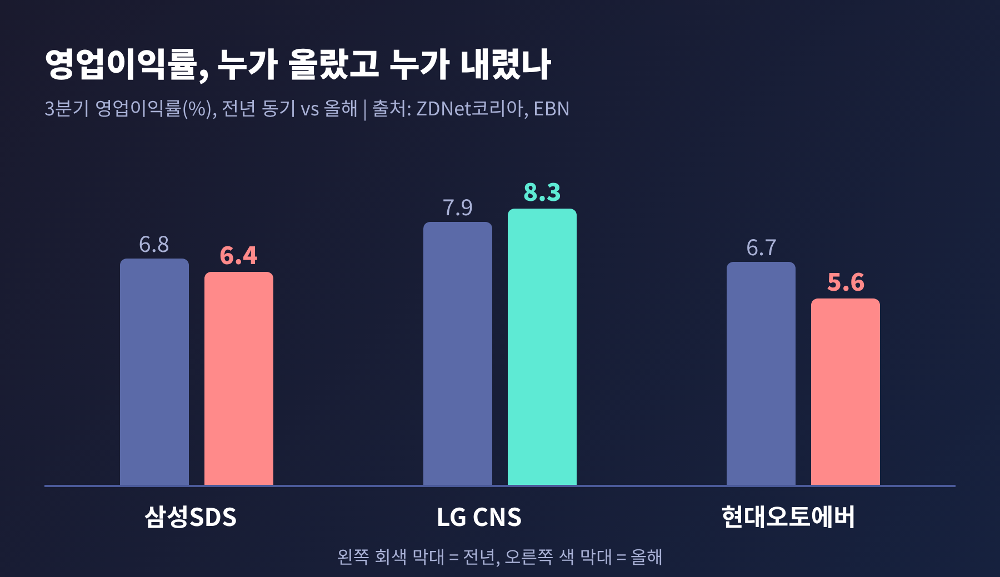
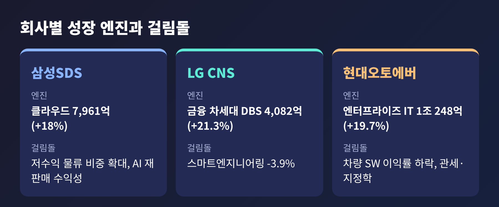
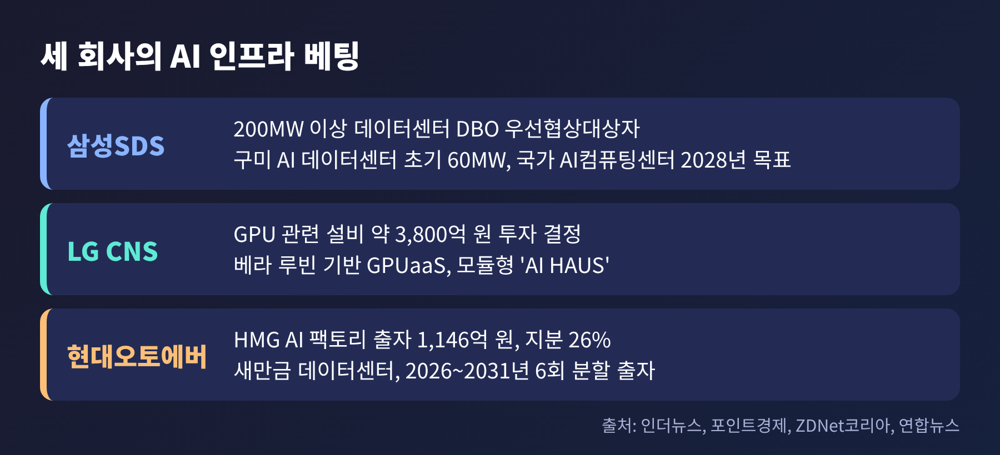
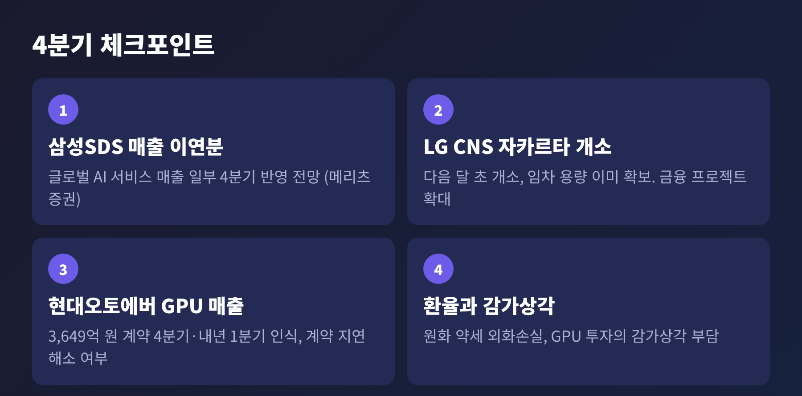

IT서비스 3사 3분기 실적, 매출은 늘고 이익은 갈린 이유

오늘은 삼성SDS, LG CNS, 현대오토에버의 2026년 3분기 실적을 정리해 보려 합니다.
세 회사 모두 매출은 9~16% 늘었지만, 영업이익은 증가와 감소로 갈렸습니다.
숫자 뒤에는 시스템 구축 중심의 IT서비스 회사가 AI 데이터센터와 GPU 사업자로 옮겨 가는 흐름이 있습니다.
■ 무슨 일이 있었나
삼성SDS는 10월 29일, LG CNS와 현대오토에버는 10월 30일에 3분기 잠정 실적을 내놓았습니다.
삼성SDS는 매출 3조 7,725억 원(전년 동기 대비 11.2% 증가), 영업이익 2,410억 원(3.7% 증가)이었습니다.
LG CNS는 매출 1조 6,643억 원(9.3% 증가)으로 분기 기준 역대 최대를 기록했고, 영업이익은 1,382억 원(15.0% 증가)이었습니다.
현대오토에버는 매출 1조 2,247억 원(16.2% 증가)으로 세 회사 중 가장 빠르게 성장했지만, 영업이익은 689억 원으로 2.6% 줄었습니다.

눈에 띄는 것은 당기순이익입니다.
삼성SDS 1,807억 원(10.1% 감소), LG CNS 830억 원(21.1% 감소), 현대오토에버 449억 원(14.9% 감소)으로 세 곳 모두 줄었습니다.
ZDNet코리아는 원화 약세에 따른 외화거래·외화환산손실을 주된 이유로 짚었습니다.
영업이익이 늘어난 LG CNS도 환율 영향으로 법인세 차감 전 이익이 1,411억 원에서 1,180억 원으로 내려앉았습니다.
시장 기대와 비교하면 결과는 더 갈립니다.
FnGuide 컨센서스 대비 영업이익은 LG CNS가 1.1% 웃돌았고, 삼성SDS는 1.6% 밑돌았으며, 현대오토에버는 약 9.9% 밑돌았습니다.
■ 왜 중요한가: 매출 성장이 곧 이익 성장은 아니다
IT서비스는 오랫동안 대기업 계열사의 전산 시스템을 만들고 운영하는 안정적인 사업으로 여겨졌습니다.
지금은 같은 업종 안에서도 AI 전환 수요를 어떻게 이익으로 바꾸느냐에 따라 성적이 달라지고 있습니다.

영업이익률로 보면 차이가 선명합니다.
LG CNS는 7.9%에서 8.3%로 올랐고, 매출총이익률도 13.9%에서 14.9%로 개선됐습니다.
삼성SDS는 6.8%에서 6.4%로, 현대오토에버는 6.7%에서 5.6%로 내려갔습니다.
한 가지 짚어 둘 점이 있습니다.
삼성SDS는 연결 실적에 물류 사업이 들어 있어 순수 IT서비스 회사와 단순 비교하기 어렵습니다.
EBN도 같은 점을 지적했습니다.
삼성SDS의 IT서비스 부문만 보면 매출 1조 6,810억 원(5.3% 증가)에 영업이익 2,014억 원(2.2% 증가), 이익률은 12.4%에서 12.0%로 내려갔습니다.
■ 회사별로 무엇이 갈랐나

삼성SDS의 성장 엔진은 클라우드와 물류입니다.
클라우드 매출은 7,961억 원으로 18% 늘었고, 클라우드 서비스 제공(CSP)은 15%, 관리형 서비스(MSP)는 25% 성장했습니다.
ZDNet코리아에 따르면 대외 클라우드 매출은 92% 증가했습니다.
다만 매출의 절반이 넘는 물류가 2조 915억 원으로 16% 안팎 늘면서, 이익률이 낮은 사업의 비중이 커졌습니다.
LS증권은 생성형 AI 솔루션 재판매의 낮은 수익성이 이익률 개선을 제한할 수 있다고 봤습니다.
LG CNS는 금융권 차세대 시스템이 끌었습니다.
디지털 비즈니스 서비스(DBS) 매출은 4,082억 원으로 21.3% 늘었습니다.
NH농협은행, 미래에셋생명, KB국민은행의 대형 프로젝트가 개발 단계에 들어선 영향입니다.
AI·클라우드 매출은 9,615억 원으로 전체의 약 58%를 차지합니다.
반면 스마트엔지니어링은 일부 계열사 발주가 줄면서 3.9% 감소했습니다.
현대오토에버는 엔터프라이즈 IT가 이끌었습니다.
매출은 1조 248억 원으로 19.7% 늘었고, 클라우드와 차세대 ERP 전환 수요가 배경으로 꼽혔습니다.
그러나 차량 SW 매출총이익률이 10.6%에서 8.5%로 떨어졌고, 회사는 미국 관세와 지정학적 위험이 수익성에 영향을 줬다고 설명했습니다.
일부 계약이 4분기로 넘어간 점도 있습니다.
ZDNet코리아는 매출총이익이 4.0% 늘 때 판매관리비가 14.4% 늘었다고 전했습니다.
■ 배경: 시스템 구축 회사에서 GPU 사업자로
이번 실적에서 숫자보다 눈여겨볼 대목은 투자 계획입니다.
세 회사 모두 AI 연산 인프라를 직접 갖추는 쪽으로 움직이고 있습니다.

삼성SDS는 퍼시픽자산운용의 200MW 이상 대형 데이터센터 설계·구축·운영(DBO) 사업의 우선협상대상자로 선정됐습니다.
국가 AI컴퓨팅센터는 8월에 착수해 2028년 준공을 목표로 하고, 구미 AI 데이터센터는 초기 전력 60MW 규모로 다음 달 초 착공할 예정입니다.
EBN은 2031년까지 AI 인프라를 800MW 이상으로 늘리겠다는 계획을 전했습니다.
LG CNS는 AI 팩토리를 위해 약 3,800억 원 규모의 GPU 관련 설비 투자를 결정했습니다.
엔비디아 차세대 GPU 베라 루빈을 기반으로 한 GPU 임대(GPUaaS)와 모듈형 데이터센터 'AI HAUS'를 추진합니다.
컨퍼런스콜에서는 자카르타 데이터센터가 다음 달 초 문을 열고, 임차 용량이 이미 확보됐다는 설명이 나왔습니다.
현대오토에버는 GPU 서비스 합작법인 'HMG AI 팩토리(가칭)'에 1,146억 원을 출자해 지분 26%를 확보합니다.
새만금 AI 데이터센터에 GPU 인프라를 구축·운영하는 사업입니다.
출자는 2026년부터 2031년까지 6차례에 나눠 이뤄집니다.
현대차·기아와 맺은 약 3,649억 원 규모의 GPU 서버 공급 계약은 2026년 4분기와 2027년 1분기에 절반씩 매출로 잡힐 것으로 증권가는 봅니다.
변화의 방향은 같습니다.
고객의 서버를 대신 운영하던 회사가 이제는 GPU를 사서 빌려주고, 전력과 부지를 확보해 데이터센터를 짓는 쪽으로 이동합니다.
■ 쟁점: 이익으로 돌아오는 시점
낙관론은 분명합니다.
iM증권은 AI 데이터센터 성장이 수익성 개선과 기업가치 재평가를 뒷받침할 것으로 내다봤습니다.
LG CNS 경영진은 컨퍼런스콜에서 AI 전환 투자가 기존 시스템 통합 사업을 대체하기보다 보완한다는 취지로 설명했습니다.
은행과 보험사가 기존 코어 시스템에 AI를 얹는 과정에서 일감이 생긴다는 논리입니다.
신중론도 만만치 않습니다.
대신증권은 신규 AI 팩토리와 인도네시아 합작 데이터센터가 언제 수익을 내는지, 그리고 설비투자에 따른 감가상각비 부담이 얼마나 되는지를 핵심 변수로 꼽았습니다.
GPU는 사서 놓는 순간부터 감가상각이 시작되지만, 임차 계약과 가동률이 채워져야 매출이 됩니다.
이 시간차가 올해 실적처럼 매출은 늘고 이익은 정체되는 모습을 만들 수 있습니다.
확인되지 않은 부분도 있습니다.
세 회사의 GPU 가동률, 해외 데이터센터 임차율, 감가상각 규모는 이번 보도에서 구체적으로 공개되지 않았습니다.
삼성증권이 2027~2029년 GPU 조달 대행 매출을 약 5조 원으로 추정했다는 보도도 어디까지나 추정치입니다.
■ 앞으로 볼 지점

첫째, 4분기 매출 인식입니다.
메리츠증권은 삼성SDS의 글로벌 AI 서비스 매출 일부가 3분기에서 4분기로 넘어가 4분기 IT서비스 매출이 직전 분기보다 2,000억 원 넘게 늘 수 있다고 봤습니다.
현대오토에버는 GPU 서버 공급 매출이 반영되기 시작하면서 4분기 영업이익이 900억~1,000억 원대로 늘 것이라는 전망이 나옵니다.
둘째, 환율입니다.
영업이익이 같아도 원화 약세가 이어지면 순이익이 다시 깎일 수 있습니다.
셋째, 11월 2일 실적 발표가 예정된 포스코DX 등 나머지 IT서비스 업체입니다.
포스코DX는 영업이익이 약 46% 줄 것이라는 컨센서스가 나와 있어, 업계 안에서도 격차가 벌어질 가능성이 있습니다.
다만 이는 전망치이며, 이 글을 쓰는 시점에 확정 실적은 확인하지 못했습니다.
이 글은 정보 제공을 위한 해설이며, 특정 종목에 대한 투자 권유가 아닙니다.
정리하면 이렇습니다.
이번 3분기는 IT서비스 회사들이 몸집은 키우고 있지만, 그것이 곧바로 이익이 되지는 않는다는 점을 보여 줬습니다.
AI 데이터센터라는 새 사업은 투자가 먼저 나가고 수익이 뒤따르는 구조입니다.
결국 남는 질문은 하나입니다. GPU를 쌓은 회사가 아니라, 그 GPU를 채울 고객을 먼저 확보한 회사가 이익을 가져가지 않겠습니까.
#IT서비스 #삼성SDS #LGCNS #현대오토에버 #3분기실적 #AI데이터센터 #GPUaaS